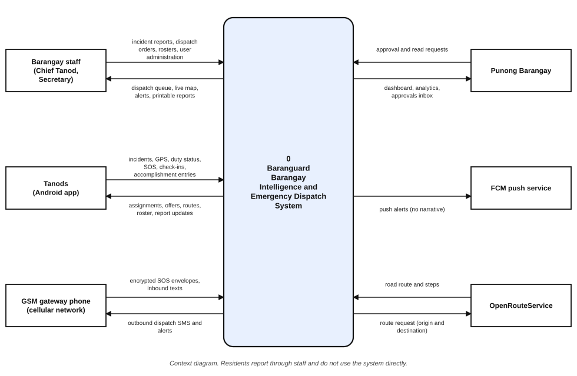
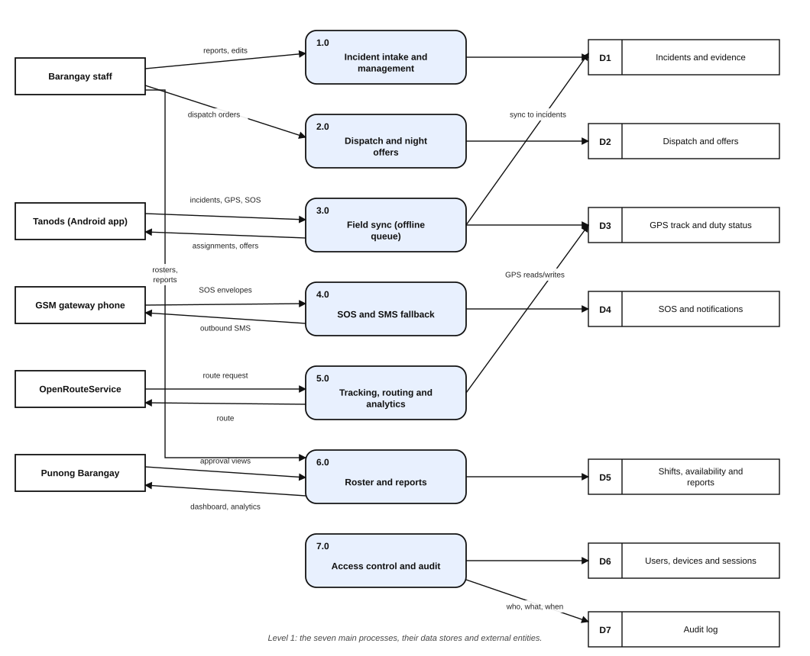

1 Introduction
1.1 Background of the Study
The rapid advancement of information technology has transformed the way organizations manage data and coordinate emergency responses, shifting from localized, paper-based protocols to highly integrated, intelligence-driven digital frameworks. Globally, the demand for robust emergency response solutions is surging, driven by rising natural disasters and the need for interconnected public safety networks. Consequently, the global incident and emergency management market is projected to grow substantially through 2030 (MarketsandMarkets, 2024). This global technological shift aligns with the United Nations' Sustainable Development Goals (SDGs), particularly SDG 3, which promotes good health and well-being; SDG 11, which advocates for sustainable, safe, and resilient cities; and SDG 16, which emphasizes the promotion of peace, justice, and effective, accountable institutions (United Nations, 2015).
In the Philippines, a significant digital divide hampers the modernization of grassroots emergency management. While the Department of Information and Communications Technology (DICT) has spearheaded the e-Government Masterplan (eGMP) 2022–2025 to connect local government units (DICT, 2024), recent data from the Philippine Statistics Authority (PSA) indicate that only approximately 44 percent of households currently have internet access (PSA, 2024). At the grassroots level, the barangay serves as the primary planning and implementing unit of government policies, acting as the immediate responder to localized crises. Despite this mandate, a vast majority of Philippine barangays continue to rely on manual, handwritten logbooks for their blotter and emergency dispatch systems. These manual processes are inefficient, susceptible to physical data loss, and pose data privacy risks under Republic Act No. 10173 (Data Privacy Act of 2012) due to the unprotected handling of sensitive citizen information (National Privacy Commission, 2012).
This operational bottleneck is evident in the Municipality of Pilar, a first-class coastal municipality in the province of Sorsogon with a population of 76,908 (PhilAtlas, 2024). The municipality is geographically vulnerable to severe weather disturbances, including the destructive impacts of recent typhoons and fires, which disrupt local communication lines. Within Pilar, the communities of Barangay Dao (population 2,485), Barangay Marifosque (population 2,473), Barangay Binanuahan (population 1,889), and Barangay Banuyo (population 3,809) exemplify the challenges of rural public safety administration. In these barangays, field responders (tanods) lack real-time geographical tracking and face communication breakdowns when terrestrial IP networks fail during calamities.
While several web-based barangay information systems currently exist in the local market, they predominantly function as static administrative repositories (Tosper et al., 2025). These existing solutions present operational limitations in rural contexts because they lack offline-first operational resilience and rely on continuous internet connectivity to maintain core dispatch workflows. This study proposes Baranguard: Barangay Intelligence and Emergency Dispatch System, an offline-first, local-server-based platform that joins three components: a GIS-enabled web command center for the Chief Tanod and barangay officials, an offline-first Android application for tanods, and an SMS best-effort fallback that carries emergency alerts when broadband fails.
Baranguard is positioned as a complement to, not a replacement for, the Barangay Information Management System (BIMS) of the Department of the Interior and Local Government (DILG), whose Katarungang Pambarangay module and electronic blotter remain the official case ledger. Barangays continue to keep the blotter and Lupon records in their own binders, and Baranguard holds no case registry. It supports compliance with RA 10173 through role-based access, per-barangay data isolation, encryption of SMS payloads, an audit log that records identifiers only, and a retention rule that permanently destroys confidential incident narratives after one year.
1.2 Objectives of the Study
This study aimed to design and develop Baranguard, a local-server-based, offline-first barangay intelligence and emergency dispatch system tailored for Barangays Dao, Binanuahan, Marifosque, and Banuyo in Pilar, Sorsogon. Specifically, the study aimed:
- To design a GIS-enabled web-based command center that centralizes incident records, tracks responder locations in real-time, and generates historical incident heatmaps.
- To develop an offline-first mobile operations application for barangay tanods capable of capturing incident details without internet access and synchronising queued records to the barangay command centre server upon reconnection.
- To implement an SMS best-effort fallback communication protocol that automatically transmits emergency alerts and geolocation data from field responders when broadband networks fail under partial-outage conditions.
- To evaluate the system's technical quality, usability, and performance using the ISO/IEC 25010:2023 software quality model.
1.3 Significance of the Study
Primary Beneficiaries. The direct users of the system, barangay tanods and the Chief Tanod who directs them, will experience a modernized, efficient workflow. The offline-first mobile application improves their daily tasks by allowing them to log incidents locally via SQLite caching, consult pre-cached offline map tiles for geographic orientation, receive dispatch assignments and, at night, dispatch offers, and raise an emergency alert that falls back to SMS during network outages. This is designed to reduce duplicated manual documentation effort and to shorten dispatch coordination time, the interval between an incident being received at the command centre and a responder confirming deployment. Emergency response time in the full sense, measured to a responder's physical arrival, is determined largely by road conditions and responder availability and is not claimed as an outcome of this study.
Administrators and Management. Local chief executives and barangay officials will benefit from enhanced, data-driven governance. The web-based command center provides historical heatmaps and statistical reports, enabling proactive decisions regarding resource deployment and patrol scheduling. Rosters, monthly accomplishment reports and school-zone reports are produced as A4 printouts that officials sign on paper, which keeps the system consistent with how barangay records are already authorized. The Barangay Secretary remains the custodian of confidential incident narratives, consistent with the Secretary's statutory custody of barangay records under Section 394(c) of Republic Act No. 7160, and a named officer, not the software, remains accountable for every record. This arrangement supports compliance with the Data Privacy Act of 2012 (RA 10173).
Future Researchers. The architectural framework of Baranguard serves as a reference for future IT capstone students and academic researchers. By demonstrating the practical deployment of an Agile Scrum framework, an offline-first mobile architecture with encrypted SQLite synchronization and device-signed writes, and a single-workstation local-server deployment that remains reachable through a persistent tunnel, this study contributes to the body of knowledge on resilient local e-governance systems.
Community and Society. The residents of Barangays Dao, Binanuahan, Marifosque, and Banuyo will benefit from a safer, more responsive community environment. The system supports SDG 3 (Good Health and Well-Being) by enabling faster emergency medical dispatch that reduces preventable injury and mortality in underserved coastal communities. It further supports SDG 11 (Sustainable Cities and Communities) and SDG 16 (Peace, Justice, and Strong Institutions), fostering greater social inclusion, transparent public service delivery, and elevated trust in local peacekeeping mechanisms (United Nations, 2015).
1.4 Scope and Delimitations
This study encompasses the development and deployment of a dual-platform incident management system, featuring an Android-based mobile application for field responders and a local network-based web application deployed on an administrative workstation. The system's core functionalities are a web-based command center equipped with GIS heatmaps, live responder tracking and a dispatch center; an offline-first tanod application; and an SMS best-effort fallback for emergency alerts. To ensure reliability in the field, the mobile application is designed with offline data caching and a three-state location behaviour: where the device has an active network path, GPS coordinates are transmitted to the command centre in real time; where the device is offline, coordinates are captured locally and queued for synchronisation on reconnection; and where broadband has failed but cellular signal persists, an emergency alert with the last known coordinates may be transmitted over the SMS best-effort fallback channel. The fallback carries emergency (SOS) alerts only, not general incident reporting.
The system implements four roles. The Admin account is the seat of the Chief Tanod, who dispatches tanods, manages users, devices, rosters and map packages, and reads the confidential incident narrative on the web. The Barangay Secretary is the Records and Reports Officer, who holds exclusive authority over the incident lifecycle (duplicate, invalid, cancelled, reopened) and the complainant's name, in keeping with the Secretary's statutory custody of barangay records under RA 7160 394(c). The Punong Barangay holds oversight access to the dashboard, analytics, approvals and reports, and has no list of cases. Tanods operate on the Android application only and have no dashboard access. Approval authority, for example over a roster or an Annex D report, is a setting that the Chief Tanod grants to a named official, not a separate role. Residents do not use the system directly: walk-in, phone-call, Facebook and SMS reports are logged by staff as incidents, and each incident records the channel through which it arrived. Deployment and testing are bounded to Barangays Dao, Binanuahan, Marifosque, and Banuyo in the Municipality of Pilar, Sorsogon. The system's technical efficacy and user acceptance are evaluated using the ISO/IEC 25010:2023 software quality assessment model.
To maintain developmental feasibility and to respect the legal position of the barangay's existing records, specific boundaries have been established. Baranguard is not a case registry and does not replace the DILG BIMS: it holds no electronic blotter and no Katarungang Pambarangay or Lupon records, and the barangays keep these in their own binders. The system excludes a payroll module for barangay staff, predictive case resolution algorithms, financial e-payment gateways for barangay clearances, resident profiling and certificate issuance. It uses no artificial intelligence of any kind, and complex computer vision, real-time video surveillance analysis and facial recognition are omitted. Direct mobile application access is restricted to authorized responders and tanods to prevent network spamming, thereby excluding general residents from the mobile platform. Envelope encryption of SMS payloads, per-device secret provisioning, replay-window validation, device-signed offline writes and an allow-listed audit log are implemented to support compliance with RA 10173; advanced biometric authentication and multi-factor authentication fall outside the developmental scope. The central database and web dashboard are hosted locally on an administrative workstation within the barangay command center, maintaining local area network (LAN) accessibility during internet blackouts while buffering field records locally on responder mobile devices. One cloud service is used: road routes are requested from OpenRouteService, which receives the origin and destination coordinates of a route and nothing else; map display and all other functions continue without it.
1.4.1 Resilience Layer Limitations and Mitigations
A critical architectural consideration is the behavior of the system under full communication blackout conditions, such as those experienced during a direct Category 4+ typhoon landfall. Historical precedent from Super Typhoon Rolly (Goni) in November 2020, which made its first landfall in Catanduanes at maximum sustained winds of 225 km/h and brought documented catastrophic disruption to the Bicol–Sorsogon region, including the municipality of Pilar itself, demonstrates that both broadband internet infrastructure and cellular tower networks can fail simultaneously. The NDRRMC's final situational report documented that 125 cities and municipalities were left without electricity after landfall, and telecommunications lines remained down across multiple Bicol provinces for days, with Globe and Smart signals described as "intermittent" in Albay and 13 municipalities in Camarines Sur reporting a complete loss of network coverage from both telecoms providers (NDRRMC, 2020). Under such conditions, the SMS fallback protocol, while valuable, operates as a best-effort bridge rather than a guaranteed channel. The SMS mechanism is empirically most effective in the more common partial-outage scenario, where cellular signal persists after broadband loss, a pattern documented across multiple Philippine typhoon events where LTE data services degrade before voice and SMS signaling channels do (DICT, 2024). Proposing a further cellular-based tertiary fallback would be architecturally redundant, as it would suffer the same failure mode.
For full blackout scenarios where both broadband and cellular fail, the system's primary resilience mechanism is the offline-first mobile architecture. All incident records captured in the field by Tanods are preserved in the local SQLite database on the device to prevent loss caused by network disconnection. These records synchronize automatically via batch API payload to the local server database upon restoration of connectivity, whether through cellular data, broadband, or local Wi-Fi. Consequently, incident records are preserved locally during network outages and reconciled with the command center once communication is re-established. Dispatchers operating the web dashboard during a full blackout follow manual operational protocols until connectivity is restored, at which point Baranguard reconciles the offline queue. A further stated limit is that the whole system depends on one workstation: if it is powered off, only the device-local SMS alert to a backup contact still works, and protecting the workstation with a UPS and a backup internet line is a deployment decision outside this study. Future research may investigate the integration of store-and-forward radio mesh protocols as a non-cellular tertiary communication channel.
Taken together, these architectural decisions reflect a deliberate design philosophy prioritizing local data preservation over real-time transmission guarantees. Rather than attempting to engineer around the physical constraints of typhoon-grade infrastructure disruption, a challenge that affects primary telecommunications networks, Baranguard accepts bounded communication latency as a trade-off for field-level operational continuity and record preservation. This trade-off aligns with resilience engineering principles, which distinguish between robustness (resisting disruption) and recoverability (restoring function after disruption); Baranguard's offline-first architecture optimizes for the latter. The system is not designed to eliminate communication gaps during complete network failures, but to ensure that upon reconnection, the incident record queue is reconciled, consistent, and actionable by barangay officials.
2 Theoretical Framework
This chapter synthesizes existing studies, systems, and literature that are relevant to the Baranguard system. It establishes the academic foundation of the research, identifies the gaps in current technological implementations, and presents the conceptual framework and definition of terms used throughout the study.
2.1 Review of Related Literature (RRL)
The literature reviewed for this study was identified through searches of Google Scholar, the Philippine E-Journals database, and the official issuance repositories of the DILG and DICT, using combinations of the terms barangay information system, incident reporting, emergency dispatch, offline-first, SMS fallback, data privacy, and records custody. The search covered material published between 2020 and 2026 and was restricted to English- and Filipino-language sources. Claims regarding the absence of particular capabilities are therefore scoped to the systems identified within this review and are not presented as exhaustive statements about all deployed systems.
2.1.1 Digitalization of Barangay Information and Incident Reporting Systems
The digitalization of local government units has become a paramount objective to enhance public service delivery and governance transparency. In the Philippines, the barangay serves as the fundamental administrative unit, yet many continue to rely on manual, paper-based systems for incident reporting, which often leads to operational inefficiencies and data mismanagement. Longcop and Fuentes (2024) assessed Barangay Health Emergency Response Teams (BHERTs) in Northern Samar, finding that reliance on manual tracking severely limits emergency response capabilities and highlighting the necessity for modernized equipment and data systems. Addressing these administrative bottlenecks, Tosper et al. (2025) developed WebYu, a web-based barangay information management system for Barangay Yuson. Their evaluation using the ISO 25010 standard demonstrated that digitizing resident records and certificate issuance reduced processing times by 68% and documentation errors by 72%.
Similarly, Gasmido et al. (2025) created a web-based platform using the Agile Scrum framework, achieving an excellent overall ISO 25010 evaluation mean of 4.62, demonstrating that digital centralization improves LGU workflows. Beyond basic administrative tasks, Lardera and Bagolong (2026) introduced a system integrating automated mobile messaging, which allowed barangay officials to send real-time SMS notifications for announcements and emergency alerts, thereby strengthening citizen participation and response coordination. Furthermore, Villafuerte (2024) examined the public safety challenges faced by barangay public safety officers (BPSOs) in the National Capital Region, noting that despite high effectiveness in current measures, critical challenges remain in community engagement, communication infrastructure, and policing strategies.
The reviewed studies demonstrate that transitioning from manual blotters to web-based information systems improves administrative efficiency and data accuracy in local government units. However, they highlight a critical need to extend digital platforms beyond static record-keeping by integrating network-resilient mobile communication and emergency dispatch tools tailored for frontline peacekeepers and responders operating in low-connectivity environments, which directly supports the development of the Baranguard system.
2.1.2 Resilient Communications: Offline-First Architecture and SMS Fallback
Emergency situations and natural disasters frequently compromise traditional terrestrial networks, rendering standard cloud-dependent applications useless during critical response periods. New Light Technologies (2024) emphasized that in disaster zones, an offline-first mobile architecture is essential. By treating disconnected operation as the primary mode rather than a fallback, offline-first designs allow field personnel to continuously capture incident data and access cached geographic maps regardless of internet availability. Complementing this architectural approach, Omar and Van Belle (2023) investigated alternative communication technologies during crises. Their findings revealed the efficacy of utilizing Short Message Service (SMS) as a reliable alternative when IP-based platforms fail due to broadband disruptions, while also noting that SMS itself is subject to failure during the most severe disaster events. Omar et al. (2024) likewise examined frameworks for resilient messaging in emergency scenarios, extending the discussion from SMS toward richer messaging channels. The integration of resilient protocols is further supported by Sasane et al. (2026), who developed an IoT-based disaster management system that paired a cloud-hosted backend with SMS incident reporting and offline-capable mobile dashboards.
Budimir et al. (2021) highlighted that the widespread ownership of mobile phones in developing nations presents opportunities for disaster risk management, provided that systems are designed to operate under infrastructural constraints. Furthermore, Qureshi et al. (2021) noted that critical incident management systems must securely and efficiently process mobile reports even during high-stress, low-connectivity events.
The synthesized literature establishes that persistent internet connectivity cannot be assumed during disaster response operations. The studies validate that combining an offline-first mobile architecture with an SMS best-effort fallback protocol is a proven strategy for maintaining uninterrupted data capture in partial-outage scenarios, while local SQLite data caching and post-reconnection batch synchronization provide the last line of resilience during full blackout events, directly informing the resilient design of the Baranguard application.
2.1.3 Data Privacy, Records Custody, and Access Control
The digitization of incident records introduces data privacy risks, because an incident narrative can contain the names, addresses and circumstances of complainants, respondents and victims. The Data Privacy Act of 2012 (RA 10173) mandates that government agencies and private entities secure personally identifiable information (PII) in their information systems (National Privacy Commission, 2012). In a barangay the custody of such records is also a matter of statute: Section 394(c) of Republic Act No. 7160 makes the Barangay Secretary the keeper of barangay records, so a system that handles incident narratives has to respect who may read, edit and keep them, not only how they are stored.
Two strands of the literature inform how Baranguard handles this. First, Qureshi et al. (2021) argue that critical incident management systems must be privacy-preserving as well as efficient, which supports designs in which access to sensitive incident content is restricted by role and every access is attributable. Second, Perante-Calina (2026) frames digital governance in local government around transparency, accountability, participation and equity, which is consistent with keeping an audit trail of who acted on a record and with keeping a named officer accountable for each decision. Baranguard applies these ideas by confining the confidential narrative to the Secretary and, on the web only, the Chief Tanod, by never sending it to push notifications, SMS or logs, by recording only identifiers and statuses in the audit log, and by permanently destroying the narrative after a fixed retention period.
The literature reviewed also shows that records systems in local government are usually studied as repositories, while the question of how an emergency tool should coexist with the official case records is rarely addressed. Baranguard takes a deliberate position: the DILG's BIMS, with its Katarungang Pambarangay module and electronic blotter, remains the official ledger, and Baranguard concentrates on the operational layer that BIMS does not provide, namely dispatch, responder tracking, SOS and offline field capture.
2.2 Gap Bridged by the Study
Despite numerous deployments of web-based barangay information systems across the Philippines, a significant gap remains in the integration of resilient emergency dispatch protocols for rural local government units. Existing systems are predominantly designed as static administrative repositories for resident profiling and certificate issuance, which fail to operate effectively during natural disasters when internet connectivity is severed. This leaves rural communities highly vulnerable during typhoons and grid failures, where rapid response is critical but communication infrastructure is severely compromised. Furthermore, the field responders who carry out the response, the tanods, are mostly volunteers who receive an honorarium, work without a daily time record and report their work in a monthly accomplishment report, so a useful tool must also fit how their duty is scheduled, reported and signed.
This study bridges this gap by developing the Baranguard system, which adds an active, offline-first emergency dispatch layer beside the records that barangays already keep. The mobile application caches data locally in an embedded encrypted SQLite database and employs an SMS best-effort fallback mechanism for transmitting an emergency alert with coordinates during partial broadband outages. This design is intended to preserve locally captured incident records during temporary network interruptions and to synchronise them once connectivity is restored. By leveraging cellular network redundancy, the system maintains a vital lifeline between responders and the command center when standard internet pipelines fail. The central services run on a single administrative workstation inside the barangay, so the dashboard remains reachable over the local network during an internet outage. Consequently, the platform is operationally resilient and supports compliance with applicable data privacy requirements under RA 10173 through access controls, an identifier-only audit log and a fixed retention period, while remaining tailored to the geographical and organizational context of the Philippine barangay. The comparison in Table 1 shows where this study sits relative to the reviewed systems.
| Capability | WebYu (Tosper et al., 2025) | Digital Barangay (Gasmido et al., 2025) | DILG BIMS | Baranguard |
|---|---|---|---|---|
| Resident profiling and records | Yes | Yes | Yes | No (out of scope) |
| Certificate and document issuance | Yes | Yes | Yes | No (out of scope) |
| Katarungang Pambarangay and electronic blotter | No | No | Yes | No (complements BIMS; records stay in binders) |
| Offline-first field data capture | Not identified | Not identified | [verify] | Yes |
| Live responder dispatch and tracking | Not identified | Not identified | [verify] | Yes |
| SMS fallback channel | No | Automated messaging | [verify] | Yes (encrypted SOS alert, best-effort) |
| Tanod duty roster and accomplishment report | Not identified | Not identified | [verify] | Yes (printed for paper signing) |
Note. "Not identified" means the capability was not found in the published description of the system; it is not a claim that the system lacks it. "[verify]" marks a cell still to be confirmed against DILG documentation.
2.3 Theoretical Framework
Endsley's cognitive model divides situational awareness into three hierarchical levels, all of which are addressed by the Baranguard software to ensure that dispatchers and field responders maintain operational clarity.

Note. Adapted from Endsley's (1995) three-level model of situational awareness, as applied to the Baranguard emergency dispatch system. Level 1 (Perception) corresponds to real-time data ingestion; Level 2 (Comprehension) corresponds to the consolidated dispatch queue, live map and incident detail; Level 3 corresponds to historical trend visualisation supporting situational assessment.
As illustrated in Figure 1, these three levels map directly onto the system's core functional layers:
Level 1 Perception: The ability to perceive the status, attributes, and dynamics of relevant elements in the environment. In Baranguard, this corresponds to the system's ability to ingest incident reports logged by staff and by tanods in the field, capture the GPS coordinates and duty status of responders, and receive SOS alerts, including the encrypted SMS alerts sent by offline field tanods.
Level 2 Comprehension: The synthesis of Level 1 elements enables the holistic understanding of the situation. Baranguard achieves this by presenting the elements together on the Dispatch Center: a queue of pending, reopened and dispatched incidents ordered by priority, a live map of tanods, incidents, SOS alerts and community landmarks, the incident detail with its timeline, and counts and badges that agree with one another. The system also reports when one of its own information sources is unavailable, for example when road routing cannot be reached, so that a dispatcher is never given a silent gap or an invented value.
Level 3 Projection: The ability to anticipate future states based on comprehension of the current situation. Baranguard supports this level indirectly rather than computationally: the system aggregates historical incident records into spatial heatmaps and descriptive trend reports, from which barangay officials form their own judgements about patrol scheduling and resource placement. The system performs no predictive modelling and generates no forecasts; the projection function in Endsley's model is exercised by the human decision-maker, informed by the retrospective evidence the system presents.
2.4 Concept of the Study
The structural development and data flow of the Baranguard system operate on a comprehensive Input-Process-Output (IPO) conceptual model. This framework illustrates the transformation of raw operational inputs into structured, actionable information through a locally hosted, resilient processing infrastructure.
Input: The system receives data from two primary vectors. The first is administrative data, which includes the barangays, user accounts and devices, the school inventory, rosters and the barangay maps. The second is operational data, comprising incident reports logged by staff through the web form (walk-in, phone call, Facebook message or SMS), field observations and incident narratives captured by tanods on the mobile application, GPS coordinates and duty status transmitted or queued by responder devices, and SOS alerts sent over data or by SMS.
Process: The core processing layer runs on the unified administrative workstation within the barangay command centre. The centralised database and the web dashboard are hosted on this single machine, which remains reachable over the barangay local area network during internet outages. Within this environment, the following mechanisms execute:
A. Offline-first sync and SMS decoding. The mobile application synchronises cached SQLite data to the command centre server when a network path is available, whether over cellular data, broadband, or local Wi-Fi. Synchronisation is idempotent: a (device_id, client_event_id) pair prevents duplicate records when a batch is retried after an interrupted upload. During partial outages, a gateway phone attached to the workstation receives the SMS fallback messages, and the backend decodes them into structured entries after verifying and decrypting the envelope.
B. Dispatch and routing. The Chief Tanod assigns an incident to a tanod. At night, between 18:00 and 06:00, the system instead sends a dispatch offer to the on-duty tanods in rounds, and the first tanod who accepts is assigned. A road route from the tanod's position to the incident is requested from OpenRouteService when needed; the stored route is reused for a short time, and a straight-line distance is shown, labelled as such, when routing is unavailable.
C. Access control and audit. Every request is checked for role, barangay and ownership on the server. Writes from tanod phones are idempotent and signed by a key held on the device. The audit log records identifiers and statuses only, never narratives, credentials or coordinates.
D. Rostering and reporting. The Chief Tanod builds and publishes the shift roster, tanods record accomplishment entries, and the Secretary prepares reports. These are produced as A4 printouts that officials sign on paper.
Output: The culmination of processing yields: dispatch assignments, offers and push alerts delivered to responder devices; a dispatch queue, live map, SOS panel and incident records for the command center; historical incident and hazard heatmaps supporting patrol planning; printed rosters, accomplishment reports and school-zone reports for paper signing; and an audit log of who acted on which record.
The complete end-to-end data transformation is summarized in Figure 2.

Note. The IPO framework illustrates the three-stage pipeline of the Baranguard system. Inputs consist of administrative and real-time operational data. Processing is performed on the administrative workstation through offline-first synchronization, SMS decoding, dispatch and routing, access control and audit, and rostering. Outputs include dispatch alerts, the command center views, heatmap analytics and printed reports.
2.5 Definition of Terms
The following key terms are defined conceptually and operationally as applied within this capstone project:
Accomplishment report. The monthly report in which a tanod lists the work done, with the confirmed duration of each entry. In this study it is the tanod's record of service, printed and signed on paper, and it is not an automatic attendance record.
Agile Scrum methodology. An iterative software engineering framework that emphasizes continuous improvement and rapid delivery through short development cycles. In this study, it serves as the specific lifecycle adopted to build, test, and refine the system in collaboration with Pilar barangay officials.
Barangay. The basic political and administrative unit of government in the Philippines responsible for public service delivery. Identifies the primary deployment sites for the system: Barangays Dao, Binanuahan, Marifosque, and Banuyo in Pilar, Sorsogon.
Baranguard. Combines "Barangay" and "Vanguard" to represent a frontline defense and administrative response unit in local communities. The official name of the proposed local-server based, offline-first emergency dispatch software developed in this project.
BIMS (Barangay Information Management System). The information system of the Department of the Interior and Local Government that barangays are directed to use, including its Katarungang Pambarangay module and electronic blotter. Baranguard complements it and does not replace it.
Chief Tanod. The head of the barangay tanods. In the system the Chief Tanod uses the Admin account to dispatch tanods, build rosters and manage users and devices, but is not a responder in the system.
Data Privacy Act of 2012 (RA 10173). A Philippine legislative framework designed to protect all forms of private, personal, or sensitive information. Establishes the statutory obligations that the system's privacy controls are designed to support. The confidential narrative of an incident is readable only by the Secretary and, on the web, the Chief Tanod, and is destroyed after one year.
Dispatch. The act of sending personnel, equipment, or resources to a specific destination to execute an emergency or administrative response. The core mechanism within the command center that allows the Chief Tanod to assign a tanod to an incident and provides GPS routing.
Dispatch offer. At night, a request sent to the on-duty tanods that is accepted by the first tanod who responds while online, who is then assigned to the incident.
Incident record. The operational record of a reported matter in Baranguard, with its type, priority, status, location, report channel and, for the Secretary, a confidential narrative. It is not the barangay's official blotter entry.
Intelligence. In emergency management, curated, actionable information collected and analyzed to support decision-making. Represents the analytical capabilities of the system, which consolidate reports, positions and history into a dispatch queue, live map, heatmaps and statistics for officials.
ISO/IEC 25010:2023. The current international standard for software product quality measurement defines characteristics such as functional suitability, performance efficiency, compatibility, interaction capability, reliability, security, maintainability, flexibility, and safety. Acts as the formal evaluation instrument used by IT experts and end-users to rate the technical integrity and user acceptance of the deployed system.
Local-server deployment. A hosting arrangement in which application and database services run on hardware physically located at the point of use rather than on remote infrastructure. In Baranguard, the database and the web dashboard operate on a single administrative workstation inside the barangay command centre, which preserves system availability over the local area network during internet outages.
Offline-first architecture. A software design paradigm in which an application functions primarily without an active internet connection by storing data locally in an embedded database. Defines the structural framework of the mobile application, enabling field Tanods to capture incidents, record GPS coordinates, and access pre-cached MBTiles map packages during network disconnections, with offline records queued in SQLite for automatic synchronization once server connectivity is restored.
Paper-first signing. The practice, adopted in this study, that rosters, accomplishment reports and school-zone reports are printed and signed on paper outside the application. The application does not record signatures or approvals.
Personally identifiable information (PII). Any data that could potentially identify a specific individual, either directly or indirectly, such as names or home addresses. Refers to the sensitive data in incident narratives that the system's access controls, audit rules and retention rule are designed to protect.
Roster. The schedule of shifts of the tanods. It is drafted by the Chief Tanod, published to the tanods, and printed for signing.
SMS best-effort fallback. A communication mechanism that utilizes standard cellular networks to transmit a critical alert during broadband internet outages. While optimized for partial-outage scenarios as a non-guaranteed protocol, complete network blackouts are instead managed by the offline-first SQLite cache.
Tanod. A barangay peace-and-order volunteer who responds to incidents in the field. The only role that uses the Android application.
3 Materials and Methods
This chapter presents the software, hardware, and methodological framework utilized in the development of Baranguard: Barangay Intelligence and Emergency Dispatch System. The resources and methods were selected based on the requirements of an offline-first architecture, a single-workstation local deployment, and the operational constraints of the target local government units.
3.1 Materials
In line with the project's objective to provide a resilient, local-server-based, and offline-first solution for local governance, the materials were chosen to support dependable local hosting, continuous data synchronization, and reliable multi-channel communication without requiring constant, high-bandwidth internet access in the field.
3.1.1 Software
The following software tools and frameworks were utilized in the development of the Baranguard system, with their respective versions summarized in Table 2:
PHP 8.2. The primary server-side language, implemented without a web framework using custom routing and serving all API endpoints. Node.js is used only for command-line tooling and tests.
Vanilla JavaScript (ECMAScript 2023+). Responsible for all dashboard frontend logic and live incident and responder updates. The dashboard is written without a JavaScript framework or bundler; offline resilience is provided by the local hosting of the server itself rather than by client-side caching. Offline data capture is handled exclusively by the mobile application.
Ionic React 9 on React 19, with Vite and TypeScript. Provide the mobile-optimized UI components and the build chain of the tanod mobile application, ensuring a native-like experience on Android devices.
MariaDB 10.4 (XAMPP). Serves as the primary structured relational storage layer hosted locally on the administrative workstation within the barangay command center, holding user accounts, incident records, dispatches, rosters and spatial data over the local area network (LAN). The schema is built from numbered, never-edited migrations.
MapLibre GL JS. Renders all interactive maps in both platforms: the live map and heatmap pages on the dashboard, and the live-map and assignment-detail pages in the mobile application. The mobile application reads locally stored MBTiles packages, which is a precondition for offline map display. The web dashboard uses OpenStreetMap raster tiles and a boundary of each barangay taken from the PSA/PSGC barangay polygons.
SQLite with SQLCipher (via Capacitor). Operates as the encrypted embedded local database within the mobile application, capturing and caching field reports, GPS coordinates, shifts and accomplishment entries during offline periods before synchronising them to the command centre server.
Capacitor 8. Acts as the bridge that wraps the web-based JavaScript codebase into a native Android container, granting the application access to background location, push notification services, a device-held signing key and native SMS functions for the emergency fallback alert.
Visual Studio Code and Android Studio. The primary integrated development environments used for writing, debugging, and compiling the full-stack codebase and the final APK file for physical deployment.
Git and GitHub. Used for source code management and collaborative team development, ensuring version history is preserved.
Plain CSS (no framework). Dashboard styling is implemented in hand-authored CSS with a token-based design system and a single self-hosted typeface, without a utility framework or preprocessor, avoiding a build step and keeping the deployed dashboard directly editable by future maintainers, a maintainability consideration for barangay-level deployment where no development toolchain is present.
Local GSM gateway (paired mobile device). To carry emergency fallback messages when broadband fails, an Android phone with its own SIM is tethered to the unified administrative workstation and runs a small gateway application. It receives the encrypted SOS messages sent by tanod phones and sends dispatch text messages over the cellular network, independently of terrestrial IP networks. No cloud SMS provider is used.
XAMPP Server Environment. Provides the local Apache web server and MariaDB database stack hosted directly on the unified administrative workstation, ensuring full command center operations remain functional over LAN during internet broadband blackouts without external cloud hosting dependencies.
Cloudflare Tunnel. A persistent outbound tunnel from the workstation that gives the web dashboard and the API a stable public address, so that tanod phones can reach the server away from the barangay LAN. It adds no hosting: the data stays on the workstation.
OpenRouteService (ORS). Provides turn-by-turn navigation routing via its GeoJSON directions endpoint. Routing requires network connectivity and spends a daily request quota, so the system reuses a recent route, caches its health check, and pauses requests after a failure. Where ORS is unreachable, the application returns a previously stored route where one exists, or a labelled straight-line distance, or reports the route as unavailable. Map display remains functional offline through cached tiles even when routing does not.
Firebase Cloud Messaging (FCM). Delivers push notifications (assignments, dispatch offers, SOS) to the tanod phones. The notification body never carries an incident narrative.
| Software | Version |
|---|---|
| PHP | 8.2.12 |
| MariaDB (XAMPP) | 10.4.32 |
| Apache (XAMPP) | 2.4.58 |
| Node.js (tooling and tests only) | 24.14.0 |
| Vanilla JavaScript | ECMAScript 2023 |
| MapLibre GL JS (web, vendored / mobile) | 4.7.1 / 6.9 |
| OpenRouteService API | v2 (directions/geojson) |
| Ionic React | 9 |
| React | 19.0 |
| Capacitor | 8.5 |
| @capacitor-community/sqlite (SQLCipher) | 8.1 |
| Vite | 8 |
| TypeScript | 5.9 |
| Android SDK (compile and target / minimum) | API 36 / API 24 |
| Gradle / JDK | 8.14.3 / 21 |
| Android Studio | Panda 4 |
| Visual Studio Code | 1.85+ |
| Git | 2.53 |
| Cloudflare Tunnel (cloudflared) | 2026.9.3 |
Note. Versions listed reflect the exact tool and library versions used during development and evaluation, to support reproducibility. Dashboard fonts are self-hosted (Inter) so that the dashboard renders identically without internet access.
eGIF Compliance. In accordance with the DICT's e-Government Interoperability Framework (eGIF) v2.0, the system's REST API endpoints use JSON as the standard data exchange format, conforming to eGIF's mandate for open, non-proprietary standards in government information systems. SMS message encoding follows the standard GSM 03.38 character set for maximum compatibility across Philippine mobile networks. No proprietary or closed-format data exchange protocols are used in inter-system communication. Where the system interfaces with cloud infrastructure, standard HTTPS with TLS encryption is employed, consistent with eGIF's security interoperability guidelines. While formal eGIF compliance audits are primarily mandated for higher-level government agencies (cities and municipalities), Baranguard voluntarily adopts these eGIF v2.0 interoperability standards. This proactive compliance ensures the barangay-level system can seamlessly integrate with the DICT's larger e-Government architecture in the future.
3.1.2 Hardware
The hardware resources employed for development and field deployment are outlined below. Because the system is designed for deployment on a single workstation rather than on dedicated server hardware, no rack-mounted or clustered infrastructure is required at the barangay hall. The workstation runs the web dashboard, the API and the database; it requires no graphics processor, because no artificial intelligence workload is hosted on it. A phone with a SIM card is tethered to the workstation as the SMS gateway. The specific hardware used for the development, unified administrative, and field deployment phases is outlined in Table 3.
| Device | Role | Specifications |
|---|---|---|
| Development and administrative workstation | Primary machine for coding, API integration and local server configuration; also serves as the web-based command center, API and database host | Intel Core i5-1235U (12th Gen), about 8 GB RAM (7.7 GB usable), integrated graphics, Windows 11 |
| Android mobile devices | Field testing and deployment for the tanod mobile application | Minimum Android 7.0 (API 24), GPS module, active cellular reception; tested on an Infinix X6840 and a Samsung Galaxy A21s |
| SMS gateway phone | Receives encrypted SOS messages and sends dispatch texts over its own SIM | Android phone with a SIM card and SMS permission, connected to the workstation by USB |
3.2 Software Methodology
The Agile Scrum framework was adopted as the development methodology for this project, consistent with its documented use in Filipino IT capstone projects (Ng, 2025). Scrum was selected over traditional Waterfall and Rapid Application Development (RAD) because it provides time-boxed checkpoints (sprints) that allow barangay officials to test the SMS fallback mechanism, the dispatch workflow and the paper-based reporting workflow continuously, ensuring complex components align with on-the-ground public safety requirements, as compared in Table 4. The standard Agile Scrum process utilized throughout the system's development life cycle is illustrated in Figure 3 below.

Note. This diagram illustrates the iterative Scrum cycle followed throughout the project's nine development phases, from the Pre-Sprint baseline measurement collection through Sprint 8 (User Acceptance Testing and ISO/IEC 25010:2023 evaluation). Each sprint followed the standard cycle of sprint planning, development, review, and retrospective described in Sections 3.2.1 through 3.2.5. The specific backlog item and duration for each sprint are detailed in Table 6.
| Criterion | Scrum (selected) | Waterfall | RAD |
|---|---|---|---|
| Stakeholder validation | Bi-weekly sprint reviews | End of project cycle only | Prototype-focused only |
| Scope control | Managed via product backlog | Rigid, inflexible requirements | Scope tends to expand |
| Complex integrations | Sprint-by-sprint integration | Sequential, late-stage integration | Limited to rapid prototypes |
3.2.0 Baseline Measurement
Prior to Sprint 0, the research team conducted structured observation sessions and semi-structured interviews with tanods and barangay officials across the four target barangays to establish pre-intervention performance baselines. These baseline metrics serve as the quantitative comparator against which post-deployment ISO 25010:2023 evaluation scores and self-reported efficiency improvements are contextualized.
The following metrics were collected from each barangay through a minimum of two observation sessions and three staff interviews per barangay:
- Incident recording time: The average time (in minutes) required for a tanod or staff member to manually write and file a complete incident entry from the moment an incident is verbally reported, including time spent locating the correct logbook, writing the narrative, and obtaining a supervisor signature.
- Tanod dispatch time: The average time (in minutes) for the Chief Tanod to identify an available tanod, contact them via mobile application alert or SMS, and confirm their deployment to an incident location.
- Data integrity error rate: The number of documented data loss or legibility incidents per quarter, including lost logbook pages, water-damaged entries, illegible handwriting flagged during audit, and entries with missing required fields.
- Post-deployment comparison: The same three metrics were re-measured after the deployment period. Dispatch coordination time was captured from system timestamps rather than by observation, specifically, the interval between dispatch creation and responder acknowledgement, and incident recording time was captured by timing a staff member entering a standard test incident, which removes observer effects from the post-intervention measure. Because the pre-intervention measure is observational and the post-intervention measure is instrumented, the two are not statistically equivalent; the comparison is reported as an indicative operational change rather than a controlled experimental result.
3.2.1 Project Initialization and Defining the Product Backlog
| Item | User Story |
|---|---|
| 1 | As the Chief Tanod, I want to view a GIS heatmap so that I can visualize high-risk incident zones. |
| 2 | As the Chief Tanod, I want to track tanods via GPS so that I can deploy the closest responder to an emergency. |
| 3 | As a tanod, I want to log incident details offline so that I can capture data even when typhoon winds disrupt mobile internet. |
| 4 | As a tanod, I want the application to automatically send an SMS fallback alert so that my emergency coordinates reach the command center when broadband fails and cellular signal is still available. |
| 5 | As the Chief Tanod, I want an incident logged from a walk-in, phone call, Facebook message or SMS to record how it reached the barangay so that the record shows its source. |
| 6 | As the Chief Tanod, I want to send a night dispatch offer to on-duty tanods so that the first available tanod is assigned without phoning each one. |
| 7 | As the Barangay Secretary, I want to be the only one who edits the incident lifecycle and the complainant's name so that records custody stays with the Secretary. |
| 8 | As the Chief Tanod, I want to publish the tanod roster, and as a tanod to submit my accomplishment report, so that both can be printed and signed on paper. |
| 9 | As the Punong Barangay, I want a read-only dashboard, analytics and approvals view so that I can oversee operations without handling cases. |
The development process was initiated through a formal kick-off meeting with representatives from the four target barangays in Pilar, Sorsogon. Through semi-structured interviews and prototype reviews, the team identified the operational bottlenecks in current manual incident reporting processes. These requirements were consolidated into a formalized product backlog, which serves as the prioritized list of all features needed for the system, as detailed in Table 5 above.
3.2.2 Sprint Planning
The project was divided into a pre-sprint phase for baseline measurement and an eight-sprint development cycle, as outlined in Table 6.
| Item | Sprint Backlog Description | Sprint | Week |
|---|---|---|---|
| 0 | Baseline measurement collection and pre-intervention documentation | Pre-Sprint | Week 0 |
| 1 | Local server environment setup (XAMPP/MariaDB) and database schema design | Sprint 0 | Week 1–2 |
| 2 | Development of web-based command center and GIS dashboard | Sprint 1 | Week 3–4 |
| 3 | Development of mobile application UI and offline SQLite caching engine | Sprint 2 | Week 5–6 |
| 4 | Integration of real-time GPS tracking and asynchronous local server sync | Sprint 3 | Week 7–8 |
| 5 | Local GSM gateway integration and encrypted SMS fallback protocol | Sprint 4 | Week 9–10 |
| 6 | Tanod workflow: dispatch offers, availability, rostering, accomplishment reports, referrals and school-zone reports | Sprint 5 | Week 11–12 |
| 7 | Chief Tanod phone console, report channels, retention rules and printable reports | Sprint 6 | Week 13–14 |
| 8 | Role-based access control, security hardening, and integration testing | Sprint 7 | Week 15–16 |
| 9 | User acceptance testing (UAT) and ISO/IEC 25010:2023 evaluation | Sprint 8 | Week 17–18 |
3.2.3 Sprint Development
During the sprint development phase, the team executed the planned technical tasks. The web platform was built and deployed to the XAMPP environment on the unified administrative workstation, while the Android APK was compiled using Ionic and Capacitor. Progress was tracked through recorded stand-up sessions logged in the team development log, with issues, particularly SMS gateway reliability and background location on Android devices, raised and resolved against the sprint backlog, and code branches merged using Git. Every design decision was recorded with its reason in the development log, and the numbered database migrations were never edited once applied.
3.2.4 Sprint Review
At the conclusion of each two-week sprint, a functioning software increment was demonstrated to the user acceptance testing team, which included barangay officials and tanods. End-users tested new features, such as testing the mobile application in airplane mode to verify that SMS fallback triggers, and provided immediate feedback on operational viability. Several scope decisions were taken as a result: the electronic blotter and the public report form were removed because barangays are directed to keep these records in their own binders and to use the DILG BIMS as the case ledger, and rosters and reports are printed and signed on paper rather than approved in the application.
3.2.5 Sprint Retrospective
Following each sprint review, the development team conducted an internal retrospective to evaluate their workflow. They discussed what engineering practices succeeded and what required adjustment, such as keeping every offline write idempotent, limiting calls to the external routing service, and making sure that every screen states honestly when an information source is unavailable. By identifying these core issues early, developers systematically eliminated technical debt, integrated localized automated testing, and enhanced overall system predictability. These process adjustments ensured high code quality and team efficiency throughout the development cycle.
3.3 Evaluation Procedure
The evaluation was conducted to determine whether Baranguard met its functional requirements and to assess its software quality using the ISO/IEC 25010:2023 standard. A summary of the system testing and evaluation methods is provided in Table 7.
| Test Type | Purpose |
|---|---|
| Unit and integration testing | Validate individual module functions and cross-module data propagation through automated backend, web and mobile test suites |
| Security testing | Verify role, barangay and ownership checks on every endpoint, session revocation, lockout, device-signed writes and that confidential narratives never leave the system |
| Performance testing | Measure API response times (median and 95th percentile) on the administrative workstation against the two-second criterion, and the delivery delay of GPS fixes and synchronised records |
| Offline and duplicate testing | Verify that records captured offline reach the server exactly once after reconnection, including retried and conflicting batches |
| System testing | End-to-end workflow validation under simulated outage scenarios |
| User acceptance testing (UAT) | Scenario-based task evaluation by barangay personnel using a signed scenario sheet per role |
| Safety scenario testing | Verify defined system behaviour under a matrix of adverse operational scenarios (GPS error or no fix, duplicate alerts, delayed SMS, misassigned dispatch, a tanod without mobile data, routing unavailable) |
3.3.1 Respondents and Sample Size Justification
The study utilized a purposive sampling technique to select 27 respondents. Because evaluating the system requires specific domain knowledge and direct operational involvement in emergency dispatch protocols, probability sampling formulas were not applied. Instead, respondents were deliberately chosen based on their technical expertise and their mandated roles within the local government units of Barangays Dao, Binanuahan, Marifosque, and Banuyo. The sample includes IT professionals to assess the system's technical and architectural integrity, alongside a comprehensive cross-section of barangay personnel, ranging from executive officials to frontline responders, to validate operational usability and functional suitability under the ISO/IEC 25010:2023 standard.
The specific distribution of these 27 respondents and the rationale for their selection are detailed in Table 8.
| Role | Count | Rationale |
|---|---|---|
| IT Experts | 3 | Technical panel to evaluate security, performance and codebase maintainability. |
| Punong Barangay | 4 | Executive users validating the dashboard, analytics and approvals views for overall barangay governance and resource allocation. |
| Barangay Secretary | 4 | Records officers assessing incident records, confidential narrative handling, reports and RA 10173-related controls. |
| Chief Tanod | 4 | The dispatchers of the system, evaluating the Dispatch Center, live map, rostering and the phone console. |
| Barangay Tanods | 12 | Frontline field responders tasked with testing the mobile application's usability, GPS routing, offline capture and SMS fallback. |
| Total | 27 |
Note. The dispatcher function described in Chapters 1 and 2 is performed by the Chief Tanod, who uses the Admin account, and not by a separate system role. Residents and Lupon members are not users of the system and are therefore not respondents.
3.3.2 Evaluation Instrument and Validity
The primary research instrument was a structured survey questionnaire anchored on the ISO/IEC 25010:2023 Systems and Software Quality Requirements and Evaluation (SQuaRE) model. This study adopts the nine-characteristic product quality model defined in ISO/IEC 25010:2023. The 2023 revision is used rather than the 2011 edition because it introduces Safety as a top-level quality characteristic. Given that Baranguard dispatches first responders to active emergency scenes, where an incorrect route or an undelivered dispatch alert could place a Tanod in physical danger, Safety is a necessary evaluation dimension for this system and could not be assessed under the 2011 model. To ensure semantic clarity and prevent technical jargon from confounding the data, the questionnaire items were contextualized into local administrative terminology, written in English with a Filipino version, and pre-tested for clarity.
The questionnaire assessed the system across the nine characteristics of the 2023 model: Functional Suitability, Performance Efficiency, Compatibility, Interaction Capability, Reliability, Security, Maintainability, Flexibility, and Safety. Because "Interaction Capability" and "Flexibility" are unfamiliar terms to non-technical respondents, questionnaire items for these characteristics were phrased in operational language (ease of use and learnability; adaptability across devices and deployment settings) while retaining the standard's definitions for analysis and reporting. Separate forms were prepared for four respondent groups: tanods, the Secretary and Chief Tanod, the Punong Barangay and Kagawad, and IT practitioners and faculty, so that each group answers only the items it has a basis to judge. Prior to full-scale deployment, the instrument underwent content validation by a panel of software engineering experts and disaster risk reduction professionals to verify that each metric accurately mapped to the operational realities of local government units.
The instrument utilized a 5-point Likert scale. Data were analyzed using the weighted mean formula:
X̄ = (∑fx) / N
Where X̄ is the weighted mean, f is the frequency of responses, x is the Likert scale weight (1–5), and N is the total number of respondents. The verbal interpretation and description for each mean range are presented in Table 9.
| Range | Verbal Interpretation | Description |
|---|---|---|
| 4.21 – 5.00 | Strongly Agree | The system fully satisfies requirements and is highly effective |
| 3.41 – 4.20 | Agree | The system mostly satisfies requirements and is generally reliable |
| 2.61 – 3.40 | Neutral | The system partially satisfies requirements with notable gaps |
| 1.81 – 2.60 | Disagree | The system rarely satisfies requirements and is largely ineffective |
| 1.00 – 1.80 | Strongly Disagree | The system does not satisfy requirements |
3.3.3 Test Data and Measurement Procedure
To keep every measurement reproducible and free of real personal data, a specific procedure was applied to the technical tests.
Test data. All technical tests used synthetic data. Automated test suites each create a disposable database and a throwaway application user, apply the full chain of numbered migrations, run against a temporary server on a spare port, and delete everything afterward, so that the real database is never touched. For measurements and demonstrations, a separate demonstration database was seeded with synthetic incidents, dispatches, GPS tracks and rosters whose coordinates were placed on real roads inside the Barangay Dao boundary. No real resident data or real blotter records from the target barangays were used.
Response-time measurement. A script logs in once as the Chief Tanod and then times successive read requests, one after another, to the dispatch, incident, GPS, summary and heatmap endpoints. It reports the median, 95th percentile and maximum in milliseconds after a stated warm-up, together with the number of requests and the machine on which it was run. Because it runs on the workstation, it measures server time without the network, and it does not measure rendering or many simultaneous users.
Delivery and synchronisation measurement. Delay figures are computed from timestamps the system already stores: the difference between the time a GPS fix was recorded on the phone and the time the server stored it, the difference between the time an incident was created offline and the time it was synchronised, and the success, duplicate and failure counts of each synchronisation batch. These figures are reported only when they come from real use of the system; figures computed from seeded data are shown as seed data and are not cited as results.
Dispatch response time. Following the definition used throughout the system, the response time of an incident is the interval from the creation of the incident record to the earliest arrival of any responder on it, counted once per incident.
3.3.4 Acceptance Criteria
The Baranguard system was considered ready for deployment when all of the following criteria were met:
- All user stories in the product backlog successfully pass UAT validation.
- The system achieves a weighted mean of at least 4.21 (Strongly Agree) in the overall ISO/IEC 25010:2023 evaluation across all nine quality characteristics.
- The SMS best-effort fallback protocol successfully transmits the encoded coordinate payload in at least 19 out of 20 (95%) simulated broadband disconnection scenarios, across three distinct Android device models, under conditions where cellular signal strength is at or above −100 dBm. This threshold is consistent with industry-standard 95% reliability conventions in emergency communication systems, and reflects the best-effort nature of the SMS channel rather than the absolute guarantee implied by a 100% criterion.
- Records captured offline are synchronised to the server exactly once in at least 95% of the test batches, with every retried or conflicting batch resolved without a duplicate record.
- The 95th percentile response time of the key dashboard read endpoints is below two seconds on the administrative workstation.
- No endpoint returns a record of another barangay or a confidential narrative to a role that may not read it in the security tests.
3.4 Ethical Considerations
This study adhered to the following ethical guidelines throughout its development and testing phases:
Informed consent. Written consent was obtained from all 27 respondents prior to their participation in user acceptance testing and evaluation activities.
Data minimization and privacy (RA 10173). No actual historical resident data or real blotter records from the target barangays were used during software development or evaluation. All testing was conducted using entirely synthetic, fabricated data generated by the research team to ensure zero risk of real-world privacy breaches. The system uses no artificial intelligence service; the only data that leaves the workstation for a third party are the origin and destination coordinates of a route request to OpenRouteService, map tiles requested from OpenStreetMap, and push notifications through Firebase Cloud Messaging, none of which carries an incident narrative.
Voluntary participation. Participation in the evaluation was completely voluntary. Respondents were informed of their right to withdraw from testing scenarios at any time without consequence.
Data handling during deployment testing. Where user acceptance testing was conducted using the deployed system, all records created during testing were flagged as test data and excluded from the operational records. The audit log records identifiers and action statuses only and does not retain raw personal information, consistent with the record-keeping requirements of the Implementing Rules and Regulations of RA 10173. Confidential narratives are destroyed automatically after one year, and the retention periods for the other record types are provisional until confirmed by the barangay and the Commission on Audit.
4 Results and Discussion
This chapter presents the results of the study in the order of its objectives. It first describes the system as it was developed, then reports the automated verification and performance measurements, then the reliability, user acceptance and quality evaluation results, and closes with a discussion of what the results do and do not show.
4.1 The System as Developed
The development produced one system with two client applications and a local server. The server exposes 103 API endpoints in 27 route files, stores its data in 34 database tables created by 44 numbered migrations, and runs on one administrative workstation. The web dashboard serves three roles (Admin as the seat of the Chief Tanod, Secretary and Punong Barangay) and the Android application serves the tanod, with a four-tab console for the Chief Tanod's own phone. Table 10 relates what was built to each objective of the study.
| Objective | What was built | Status |
|---|---|---|
| 1. GIS web command center | Dispatch Center with an emergency queue and live map; Live Map of responders; Incident Management; Analytics with statistical reports and incident heatmaps; a boundary for each of the four barangays; night dispatch offers; rosters and reports for printing. | Implemented. Automated checks pass (Section 4.2). User evaluation pending. |
| 2. Offline-first mobile application | Android application with an encrypted SQLite store, an offline queue with idempotent synchronisation, cached map packages, background GPS, assignment, SOS, availability, accomplishment and school check-in screens. | Implemented. Synchronisation and duplicate handling verified by automated tests. Continuous background GPS with the screen locked was observed on a device. A complete offline-to-sync cycle on field devices is pending. |
| 3. SMS best-effort fallback | When the server cannot be reached, the phone sends an encrypted SOS message with the last known coordinates to the gateway phone, and a plain-text alert to one backup contact; the gateway decodes the message into a real SOS on the dashboard without creating a duplicate when the queued copy later synchronises. | Implemented. The message format and encryption were verified by cross-checking that a message built by the mobile code is decrypted by the server code. A real end-to-end message from a tanod phone through the gateway phone is pending. |
| 4. Quality evaluation | Four ISO/IEC 25010:2023 questionnaires (one per respondent group), a key informant guide, a needs questionnaire and a signed UAT scenario sheet of 92 cases. | Instruments prepared. Responses pending. |
Three decisions shaped the final scope. First, the system holds no electronic blotter, Katarungang Pambarangay or Lupon records, because barangays are directed to keep these in their own binders and to use the DILG BIMS as the case ledger; Baranguard complements that ledger. Second, no artificial intelligence component is included. Third, rosters, accomplishment reports and school-zone reports are printed and signed on paper, and the system does not record signatures.
4.2 Automated Verification Results
The backend was verified by 38 scripted suites. Each suite creates a disposable database and application user, applies the full migration chain, starts a temporary server, runs its checks over real HTTP requests, and removes everything afterwards. Table 11 groups the suites by the quality area they exercise.
| Area | Suites | Checks passed | Checks failed |
|---|---|---|---|
| Command center, dispatch, GIS and incident handling | 10 | 213 | 0 |
| Offline-first capture, synchronisation and devices | 7 | 314 | 0 |
| SMS fallback and notifications | 3 | 88 | 0 |
| Security, access control and audit | 10 | 484 | 0 |
| Tanod workflow, rosters and reports | 6 | 505 | 0 |
| Data retention | 2 | 191 | 0 |
| Total | 38 | 1,795 | 0 |
Note. Counts are the checks printed by each suite when it was last run on 17 October 2026. A suite that prints only "all checks passed" without a number is counted in the Suites column and not in the Checks column. No suite reported a failed check.
The web dashboard was verified by 734 render and unit tests that load every page in a simulated browser against a fake server, and by a wiring check of imports, stylesheet classes and typography rules, which at the time of writing reports 936 passing checks and 30 findings in stylesheets that are still being revised (undefined classes, font weights and families outside the type rules). The mobile application was verified by a static type check and lint run without errors and by 259 checks of the local database schema and its migrations. These are checks of code correctness and not measurements of user-perceived quality; they show that the specified behaviour holds, and they are the evidence for Functional Suitability and part of Security and Reliability in Section 4.6.
4.3 Performance Efficiency Results
The response time of the key read endpoints was measured as described in Section 3.3.3. The script was run on the administrative workstation itself (Intel Core i5-1235U, 8 GB RAM, Windows 11) against the demonstration database, which held 159 incidents, 134 dispatches and 3,233 GPS fixes. It issued 40 requests per endpoint one after another after 5 warm-up requests. The single login took 326.1 ms. The results are in Table 12.
| Endpoint | Median | 95th percentile | Maximum | Failures |
|---|---|---|---|---|
| GET /gps/live | 35.8 | 51.8 | 53.1 | 0 |
| GET /incidents | 28.4 | 51.8 | 57.4 | 0 |
| GET /dispatch | 36 | 50.1 | 53.8 | 0 |
| GET /reports/summary | 40.7 | 57.5 | 59.5 | 0 |
| GET /reports/heatmap | 32.6 | 47.9 | 66.1 | 0 |
Note. Round trip from the same machine over the loopback interface, one request at a time. It measures server time without network delay and without page rendering, and does not measure many simultaneous users.
Every endpoint answered in well under the two-second criterion of Section 3.3.4: the slowest 95th percentile was 57.5 ms. This indicates that, for one user on this hardware and a database of this size, server time is not a limiting factor for the dashboard. It does not show how the system behaves with several dispatchers at once or with a database that has grown over years of use, and it says nothing about the delay a tanod's phone adds on a mobile connection. The dashboard also refreshes by polling every 15 seconds, so the position shown on the map is at most the delivery delay plus 15 seconds old, which is why the system describes its tracking as near-real-time.
4.4 Reliability, Offline Capture and SMS Fallback
The system stores the timestamps needed to measure how long a GPS fix, an offline incident or an SOS takes to reach the server, how often a synchronisation batch succeeds, repeats or fails, and how long a responder takes to arrive. A reporting script computes these figures from the database. The figures it produced for the demonstration database were generated from seeded records, not from real use, and are therefore not reported here as results. Table 13 lists what will be reported once the system has been used by tanods in the field and the SMS fallback has been exercised with real phones.
| Measure | How it is computed | Result |
|---|---|---|
| GPS fix delivery delay | Server time minus time recorded on the phone (live fixes) | pending |
| Interval between fixes per tanod | Gap between consecutive fixes | pending |
| Offline incident to server delay | Synchronisation time minus offline creation time | pending |
| Synchronisation outcome | Share of batches that succeed, repeat or fail | pending |
| SOS trigger to server delay | Server time minus trigger time, by channel (data or SMS) | pending |
| SMS fallback success | Messages that become an SOS on the dashboard out of 20 simulated disconnections, on three Android models | pending (criterion: at least 19 of 20) |
| Dispatch response time | Incident creation to the earliest responder arrival, once per incident | pending |
4.5 User Acceptance Testing Results
The user acceptance test uses a signed scenario sheet with one part per role. A case passes when the user completes the steps and the expected result is observed. Table 14 lists the cases and is completed from the signed sheets. The criterion adopted for the course is a pass rate of at least 90 percent with all critical defects resolved.
| Scenario part | Cases listed | Executed | Passed | Failed |
|---|---|---|---|---|
| B. Tanod (Android) | 30 | pending | pending | pending |
| C. Chief Tanod (web) | 23 | pending | pending | pending |
| D. Chief Tanod (phone console) | 7 | pending | pending | pending |
| E. Secretary (web) | 22 | pending | pending | pending |
| F. Punong Barangay (web) | 10 | pending | pending | pending |
| Total | 92 | pending | pending | pending |
Note. Pass rate = cases passed ÷ cases executed × 100. Cases executed = passed + failed.
4.6 ISO/IEC 25010:2023 Evaluation Results
The weighted mean of each of the nine characteristics is computed from the questionnaires with the formula in Section 3.3.2 and interpreted with Table 9. Each respondent group answers only the characteristics it has a basis to judge. Table 15 will hold the results. The right-hand column states what evidence besides the survey already exists for the characteristic, so that the survey result can be read against measured facts.
| Characteristic | Weighted mean | Interpretation | Measured evidence already available |
|---|---|---|---|
| Functional Suitability | pending | pending | Automated suites (Table 11); UAT (Table 14) |
| Performance Efficiency | pending | pending | Response times (Table 12) |
| Compatibility | pending | pending | JSON over HTTPS; Android API 24 and above; two test phone models so far |
| Interaction Capability | pending | pending | UAT completion without help (scenario sheet) |
| Reliability | pending | pending | Offline and duplicate suites; field measures (Table 13) |
| Security | pending | pending | Tenant, role and session suites (Table 11) |
| Maintainability | pending | pending | Numbered migrations, test suites, decision log |
| Flexibility | pending | pending | Four barangays on one deployment; local or tunnelled access |
| Safety | pending | pending | SOS without a GPS fix; duplicate alert handling; safety scenarios |
| Overall | pending | pending |
4.7 Discussion
Against the objectives. The first three objectives are met in the sense that each was designed and implemented and that its software behaviour is verified by automated checks. They are not yet shown to work in the conditions that motivated them. Whether the offline cycle and the SMS fallback work on field phones during a real outage, and whether tanods and officials find the system usable, are questions that only Sections 4.4 to 4.6 can answer, and those results are pending. The fourth objective is prepared, not met.
Against the literature. The reviewed systems were administrative repositories (Tosper et al., 2025; Gasmido et al., 2025), and their evaluations reported ISO 25010 means above 4.5 for record-keeping tasks. Baranguard addresses the gap those studies left: dispatch, tracking and resilient communication for responders. It follows the recommendation of New Light Technologies (2024) to treat disconnected operation as the primary mode and the finding of Omar and Van Belle (2023) that SMS is a useful but fallible alternative, which is why the fallback is described as best-effort and limited to emergency alerts.
What changed during development. The initial design included an electronic blotter with automated redaction by a local language model. The study removed both. The blotter duplicated the DILG BIMS, which barangays are required to use as the case ledger, and without a blotter to feed there was nothing for the model to redact or summarise. The removal narrows the scope but also removes a data privacy risk and a hardware demand, and it keeps Baranguard in the position of a complement to the official records. The same logic led to paper-first signing: the officials already sign paper, so the system prepares the printout and does not duplicate the signature.
Limitations and threats to validity.
- One workstation. The whole system runs on one machine. If it is off, only the SMS alert to a backup contact still works. A UPS and a backup internet line are outside this study.
- Synthetic data. Every measurement so far uses synthetic records. Real data will have a different size, shape and noise.
- One cloud dependency. Road routing depends on a third-party service with a daily request quota. The system degrades to a stored route or a labelled straight line, but a live road route is not guaranteed.
- Device coverage. The Android application has been run on two phone models. Vendor battery policies on other models may stop background location or delay messages.
- Sample and evaluator bias. The respondents are chosen purposively, and the team that built the system also administers the evaluation. The baseline is observed while the post-deployment figure is instrumented, so the comparison is indicative only.
- Unconfirmed policies. Retention periods other than the one-year narrative rule are provisional until the barangay and the Commission on Audit confirm them, and the Safer School Zones annexes follow the barangay's own forms until DILG MC 2026-037 is checked.
4.8 Summary of Findings
To be completed after Sections 4.4 to 4.6 have results. The findings that stand now are: the system was implemented as designed for the first three objectives; its automated checks pass; and its server response time is far below the two-second criterion for a single user on the workstation.
References
Budimir, M., Bee, E., & Paul, J. (2021). Using mobile phone technologies for disaster risk management: Reflections from SHEAR. Science for Humanitarian Emergencies and Resilience. https://nora.nerc.ac.uk/id/eprint/530631/1/SHEAR_MobileTechs_v6.pdf
Department of Information and Communications Technology. (2024). The Philippine government's digital transformation through DICT's e-Government initiatives. DICT Official Publications. https://dict.gov.ph
Endsley, M. R. (1995). Toward a theory of situation awareness in dynamic systems. Human Factors, 37(1), 32–64. https://doi.org/10.1518/001872095779049543
Gasmido, W. L. J., De Guzman, J. T., Natividad, C. J. T., Sicuan, C. K. B. L., & Reyes, D. A. (2025). Digital Barangay: Ayos Lomboy's web-based management and information system. Psychology and Education: A Multidisciplinary Journal, 37(5), 424-431. https://doi.org/10.70838/pemj.370501
ISO/IEC. (2023). ISO/IEC 25010:2023, Systems and software engineering, Systems and software quality requirements and evaluation (SQuaRE), Product quality model. International Organization for Standardization.
Lardera, L. P., & Bagolong, S. (2026). Barangay information management system with automated mobile messaging for improved community engagement. International Journal on Science and Technology, 17(1), 1–12. https://www.ijsat.org/papers/2026/1/10412.pdf
Longcop, L. B., & Fuentes, H. C. (2024). Profile, problems and needs of Barangay Health Emergency Response Team in Gamay, Northern Samar. International Journal of Research and Innovation in Social Science, 8(11). https://doi.org/10.47772/IJRISS.2024.8110022
MarketsandMarkets. (2024). Incident and emergency management market by solution, communication tools & devices, service, vertical and region, Global forecast to 2030 [Grey literature, commercial market research report]. MarketsandMarkets Research. https://www.marketsandmarkets.com
National Disaster Risk Reduction and Management Council. (2020, November 11). SitRep No. 12 re preparedness measures and effects for Super Typhoon "Rolly" (I.N. GONI). https://ndrrmc.gov.ph/attachments/article/4135/SitRep_no_12_re_STY_ROLLY_as_of_11NOV2020.pdf
National Privacy Commission. (2012). Republic Act No. 10173: Data Privacy Act of 2012. Government of the Republic of the Philippines. https://www.privacy.gov.ph
New Light Technologies. (2024). Building high-performance offline mobile apps for disaster zones. NLT Tech Blog. https://newlighttechnologies.com/blog/building-high-performance-offline-mobile-apps-for-disaster-zones
Ng, G. C. (2025). Enhancing IT capstone programs through Agile practices: Insights from Filipino community projects. Journal of ICT in Education, 12(2), 99–123. https://doi.org/10.37134/jictie.vol12.2.7.2025
Omar, S., & Van Belle, J.-P. (2023). When social media fails: Alternative technologies for communication in disasters. Proceedings of the 9th African Conference on Information Systems and Technology, Article 11. https://digitalcommons.kennesaw.edu/cgi/viewcontent.cgi?article=1104&context=acist
Omar, S., et al. (2024). From SMS to RCS: Intelligent frameworks for resilient messaging in emergency scenarios. Telecommunications Research Journal. https://www.researchgate.net/publication/401606852_FROM_SMS_TO_RCS_INTELLIGENT_FRAMEWORKS_FOR_RESILIENT_MESSAGING_IN_EMERGENCY_SCENARIOS
Perante-Calina, L. E. (2026). Digital governance: Local governments' transformation journey towards transparency, accountability, participation, and equity (TAPE). Paper presented at the 2026 KAPA International Conference, Busan, South Korea. https://www.soumu.go.jp/main_content/001045224.pdf
PhilAtlas. (2024). Pilar, Sorsogon profile. Philippine Standard Geographic Code Data. https://www.philatlas.com/luzon/r05/sorsogon/pilar.html
Philippine Statistics Authority. (2024). National ICT household survey (NICTHS) preliminary results. PSA Official Reports. https://psa.gov.ph
Qureshi, A., Garcia-Font, V., Rifa-Pous, H., & Megias, D. (2021). Collaborative and efficient privacy-preserving critical incident management system. Expert Systems with Applications, 163, Article 113727. https://doi.org/10.1016/j.eswa.2020.113727
Sasane, K. P., Dhamale, N. S., Yadav, O. D., & Sonawane, R. B. (2026). Disaster management system. International Journal of Engineering Research & Technology, 15(4). https://doi.org/10.5281/zenodo.19692535
Tosper, R., Jr., Mangalino, J., Obena, K., Simon, M., Tayag, M., & Reyes, D. (2025). WebYu: A Barangay Yuson web-based information management system initiatives. Psychology and Education: A Multidisciplinary Journal, 37(5), 432-442. https://doi.org/10.70838/pemj.370502
United Nations. (2015). Transforming our world: The 2030 agenda for sustainable development. UN General Assembly Resolution 70/1. https://sdgs.un.org/2030agenda
Villafuerte, A. (2024). Public safety challenges faced by barangay officers and police: Towards a stronger policy framework. Journal of Interdisciplinary Perspectives, 3(1), 249–257. https://doi.org/10.69569/jip.2024.0639
APPENDICES
Appendix A: Data Flow Diagram

Note: This high-level context diagram defines the boundaries of the Baranguard system. It illustrates the data flows between the single system process and its six external entities: barangay staff (Chief Tanod and Secretary), tanods using the Android application, the Punong Barangay, the GSM gateway phone on the cellular network, the Firebase push service and OpenRouteService, highlighting the primary inputs and outputs for emergency management. Residents report through staff and do not use the system directly.

Note: This diagram illustrates the decomposition of the Baranguard system into its seven main processes: incident intake and management, dispatch and night offers, field sync, SOS and SMS fallback, tracking, routing and analytics, roster and reports, and access control and audit. It maps the data routing between these processes, the external entities and the data stores, all of which are held on the local administrative workstation.
Appendix B: Use Case Diagram

Note: This diagram specifies the functional requirements and user-role interactions within the system boundary. It outlines the scope of privileges across three groups of use cases, the web command center, records and reports, and mobile operations, as mapped to their respective actors: the Chief Tanod, the Barangay Secretary, the Punong Barangay and the Tanod.
Appendix C: Entity Relationship Diagram

Note: This entity relationship diagram outlines the structure of the Baranguard database as built, drawn from the declared foreign keys of the running schema. It shows 19 of its 34 tables, the core of the incident, dispatch, responder, roster and school-zone data, with their primary keys, foreign keys and cardinalities. The remaining tables hold sessions, notifications, settings, retention and synchronisation data.
Appendix D: Design of the System as Built

Note: The login page serves as the secure entry point of the Baranguard system, allowing authorized users to access the platform through credential verification. It ensures secure and role-based access to system features and services.

Note: The admin dashboard serves as the central interface for monitoring the barangay's operations. It provides the Chief Tanod with the count of pending and reopened incidents, the incident trend, the incident types, the number of tanods on duty and the average response time. The data shown are synthetic demonstration data.

Note: The Dispatch Center allows the Chief Tanod to coordinate emergency response: the emergency queue lists pending, reopened and dispatched incidents, and the live map shows the tanods, incidents, SOS alerts and community landmarks inside the barangay boundary.
Note: The Live Map page provides near-real-time location monitoring of responders and incidents on an interactive geographic map, with the age of each responder's last position and a live activity feed.

Note: Incident Management allows authorized staff to search, log and review incident records, and shows for each incident its type, location, priority, status, assigned responder and the channel through which it was reported. It does not hold the barangay's official blotter, which stays in the barangay's binders and in the DILG BIMS.

Note: The Tanod Mobile Application Home Page serves as the main interface for field responders, providing quick access to emergency reporting, incident updates, and essential response features for efficient field operations.

Note: The Tanod Mobile Application Log serves as a digital record-keeping tool that tracks the real-time activities and incident reports submitted by barangay tanods during their patrols. It centralizes field data to ensure accountability and provides administrators with an organized history of community safety efforts.

Note: The Tanod Mobile Application Assignments is a dispatch tool that enables the Chief Tanod to assign tasks with precise routing and allows tanods to receive and view their emergency assignments directly on their mobile devices, ensuring coordinated and accountable field operations.